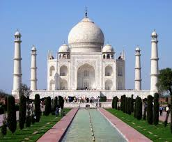

Taj Mahal
The Taj Mahal is an ivory-white marble mausoleum on the south bank of the Yamuna river in the Indian city of Agra. It was commissioned in 1632 by the Mughal emperor, Shah Jahan, to house the tomb of his favourite wife, Mumtaz Mahal.| Read more »